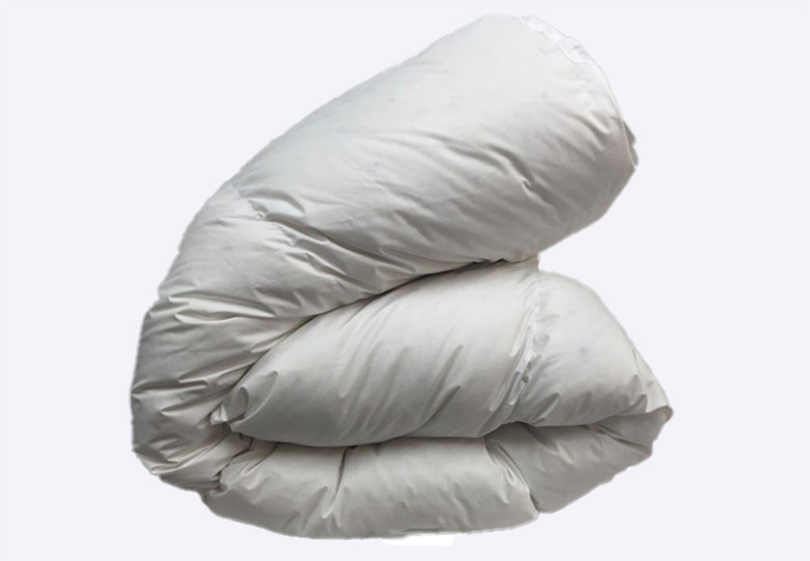

羽毛の買い付け
よりよい品質の羽毛を買い付けするために、飼育状態も厳重に管理され、独自の基準を満たしているハンガリーやポーランドなど海外の飼育場から担当者が自らの目で品質を見極め、買い付けを行っています。
除塵処理と洗浄
品質検査をクリアした羽毛は、良いダウンの能力を最大限に活かせるためにニオイの元となる油脂分や不純物が含まれている原毛の段階から、いくつもの工程で除塵をくりかえし時間をかけて丁寧に洗浄していきます。
良質なダウンを選ぶ
丁寧に洗浄された羽毛から、独自のマシンを使用し、風流をつくり、大きくてふんわりとしたダウンのみが巻き上がって最後の部屋まで移動して行くしくみです。3つ目の部屋に集まってくるダウンは良質でふっくらしています。
全て手作業の縫製
国産の上質な生地を独自の完全立体キルトの縫製を階段状に職人が手作業で縫っていきます。熟練の職人でも1日12～13枚しかつくることができません。

プロによる羽毛詰め
ひとマスごとに正確な量の羽毛を詰めていきます。詰め終わった羽毛ふとんは重量検査を行い、合格した物だけが羽毛の詰め口を閉じ、最終の検査を行い仕上がりです。